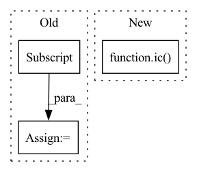

Pattern ID :6047
Before Change
lst_bar_n_ts = [(bar0, ts)]
for bar in bars:
ts_ = bar[m21.meter.TimeSignature]
if ts_:
ts = next(iter(ts_))
lst_bar_n_ts.append((bar, ts))
After Change
bars = iter(list(part[m21.stream.Measure]))
lst_bar_n_ts = bars2lst_bar_n_ts(bars)
encs = [MxlMelodyExtractor.BarEnc(bar, ts, self.prec) for (bar, ts) in lst_bar_n_ts]
ic( encs)
exit(1)
else:
return scr
In pattern: SUPERPATTERN
Frequency: 4
Non-data size: 3
Instances Fragment ID: 21052693
Project Name: stefanheng/symbolic-music-generation
Commit Name: 8d126cbf838b183b5e5d3de6015f90ece225b964
Time: 2021-12-19
Author: 43276957+SpongeBobBang@users.noreply.github.com
File Name: melody_extractor.py
M Class Name: MxlMelodyExtractor
N Class Name: MxlMelodyExtractor
M Method Name: bar_with_max_pitch(2)
N Method Name: bar_with_max_pitch(2)
M Parent Class:
N Parent Class:
M File Name: melody_extractor.py
N File Name: melody_extractor.py
M Start Line: 508
M End Line: 525
N Start Line: 504
N End Line: 506
Before Change
bar0 = part.measure(0)
tempos = list(bar0[m21.tempo.MetronomeMark])
assert len(tempos) > 0
tempo = tempos[0]
[bar.removeByClass(m21.tempo.MetronomeMark) for bar in part[m21.stream.Measure]]
tempo.number = self.mean_tempo
bar0.insert(tempo)
ic(list(bar0))After Change
bar0 = part.measure(self.bar_strt_idx)
bar0.insert(self.tempo_strt)
ic(list(bar0))
ic( bar0.isSorted)
title = scr.metadata.title
if title.endswith(".mxl"):
title = title[:-4] Fragment ID: 21052692
Project Name: stefanheng/symbolic-music-generation
Commit Name: 07f642be0061bea74ebae4bc6f838ccfa4c3ee92
Time: 2021-11-25
Author: 43276957+SpongeBobBang@users.noreply.github.com
File Name: melody_extractor.py
M Class Name: MxlMelodyExtractor
N Class Name: MxlMelodyExtractor
M Method Name: bar_with_max_pitch(2)
N Method Name: bar_with_max_pitch(2)
M Parent Class:
N Parent Class:
M File Name: melody_extractor.py
N File Name: melody_extractor.py
M Start Line: 312
M End Line: 352
N Start Line: 368
N End Line: 394
Before Change
z1 = F.normalize(z1, dim=2)
z2 = F.normalize(z2, dim=2)
z1_means = z1[:, 0, :] // [batch_size, metric_dim]
z1_vars = torch.exp(z1[:, 1, :]) // [batch_size, metric_dim]
z2_means = z2.mean(1) // [batch_size, metric_dim]
z2_vars = z2.var(1) // [batch_size, metric_dim]After Change
kl_similarity3 = torch.distributions.kl_divergence(normal1, normal2)
kl_similarity4 = torch.distributions.kl_divergence(normal2, normal1)
ic( z1_vars.shape)
log_det_diff = torch.log(z1_vars.prod(dim=2) / (z2_vars.prod(dim=2)+ 1e-5))
trace_inv = ((1 / (z2_vars + 1e-5)) * z1_vars).sum(dim=2)
mean_sigma_mean = ((z2_means - z1_means) ** 2 * (1 / (z2_vars + 1e-5))).sum(dim=2) Fragment ID: 21052694
Project Name: hannesstark/3dinfomax
Commit Name: 28ee6a8020068ba6060457d35663295c808fafcc
Time: 2021-07-14
Author: hannes.staerk@gmail.com
File Name: commons/losses.py
M Class Name: KLDivergenceMultiplePositives
N Class Name: KLDivergenceMultiplePositives
M Method Name: forward(3)
N Method Name: forward(3)
M Parent Class: _Loss
N Parent Class: _Loss
M File Name: commons/losses.py
N File Name: commons/losses.py
M Start Line: 234
M End Line: 248
N Start Line: 236
N End Line: 252
Before Change
exit(1)
for idx, bar in enumerate(part[m21.stream.Measure]):
if idx == 6:
vb = self.vertical_bars[idx]
for pnm, b in vb.items():
ic(pnm, b)
if "2" in pnm:
// b.show(fmt="musicxml.png")After Change
part = scr.parts[0]
pnm = part.partName
ic(pnm)
ic( list(self.scr.parts[0].measure(0)))
for i in range(1, len(self.scr.parts)):
assert len(self.scr.parts[i][m21.tempo.MetronomeMark]) == 0
// ic(list(self.scr.parts[1][m21.tempo.MetronomeMark])) Fragment ID: 21052696
Project Name: stefanheng/symbolic-music-generation
Commit Name: 4a5a5847113d13d252e65668534ef6ab096ff24c
Time: 2021-11-25
Author: 43276957+SpongeBobBang@users.noreply.github.com
File Name: melody_extractor.py
M Class Name: MxlMelodyExtractor
N Class Name: MxlMelodyExtractor
M Method Name: bar_with_max_pitch(2)
N Method Name: bar_with_max_pitch(2)
M Parent Class:
N Parent Class:
M File Name: melody_extractor.py
N File Name: melody_extractor.py
M Start Line: 302
M End Line: 347
N Start Line: 346
N End Line: 379